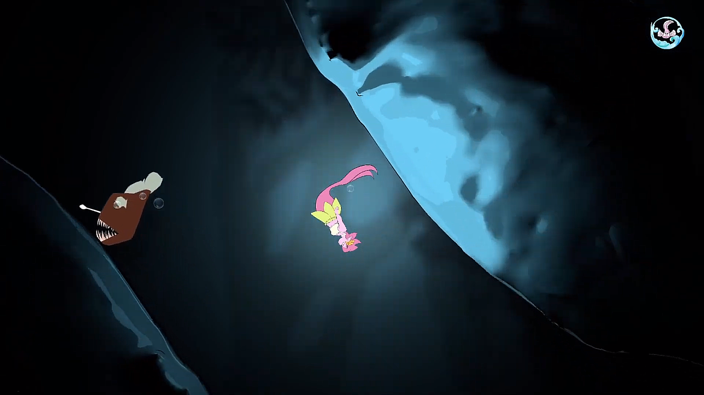
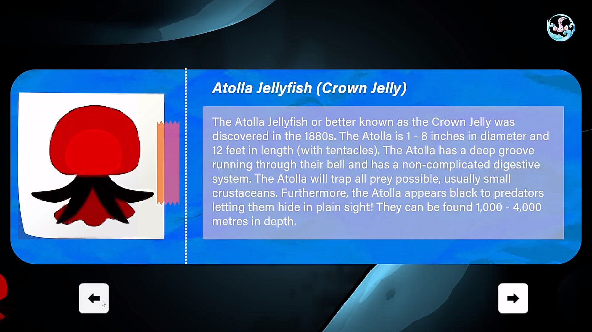
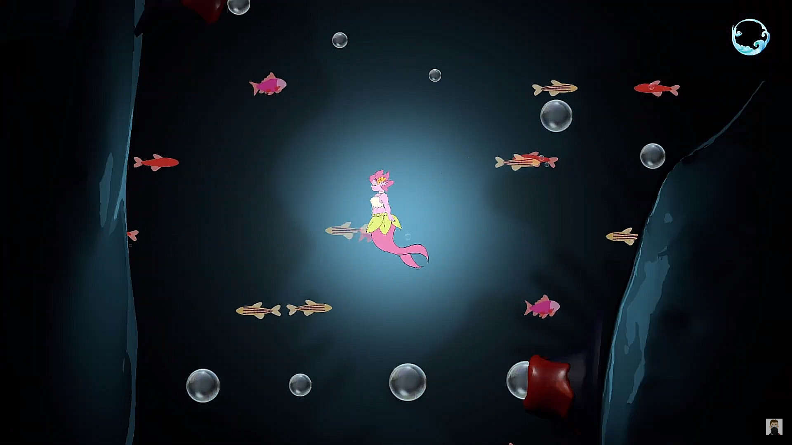

Description
Tales of the Abyss is a 2D adventure game, made for a UNESCO brief. The game starts in the deep ocean, and explore how humans impacted the oceans environment for water
life. The player must collect the spirit within each level to move on and get to the ocean shore.
*FIRST LOAD MAY TAKE LONGER TO LOAD
Collaborators
Georgina Parks
https://www.artstation.com/georginap
Krushanu Waghmare
https://www.behance.net/krushwaghmare
Paige Longstaff
https://www.instagram.com/paige.theillustrator/ (Instagram)
Maria Audrey
Ola Orzel
Ruili Wu
Game
Showcase
Screenshots
|  |  |
|  |  |